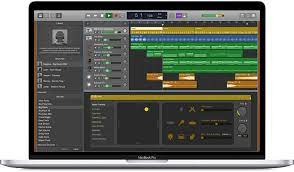

- GarageBand...
- Qtractor...
- LMMS...
- Audacity...
- Ardour...
- DarkWave Studio...
- Hydrogen....
- SoundBridge...
GarageBand
-
GarageBand is a fully equipped music creation studio right inside your Mac — with a complete sound
library that includes instruments, presets for guitar and voice, and an incredible
selection of session drummers and percussionists.With an intuitive, modern design, it’s easy to learn, play, record, create, and share your hits worldwide . You can create professional-sounding music right away with or without an instrument. Plug in your guitar or mic and choose from a jaw‑dropping array of realistic amps and effects. You can even create astonishingly human‑sounding drum tracks and become inspired by thousands of loops from popular genres like EDM, Hip Hop, Indie, and more . GarageBand also provides built-in lessons for piano and guitar, and you can even get instant feedback on your playing to help hone your skills . Tons of helpful recording and editing features make GarageBand as powerful as it is easy to use. Edit your performances right down to the note and decibel. Fix rhythm issues with a click. Finesse your sound with audio effect plug‑ins. And finish your track like a pro, with effects such as compression and visual EQ .

Qtractor
-
Qtractor is an Audio/MIDI multi-track sequencer application written in C++ with the Qt framework. It is a free, open-source software, distributed under the terms of the GNU General Public License (GPL) version 2 or later. Qtractor is developed on the Qt C++ application and UI framework, and uses JACK for audio and ALSA sequencer for MIDI as multimedia infrastructures. It is a traditional multi-track tape recorder control paradigm that supports multi-track audio and MIDI sequencing and recording. Qtractor is specially dedicated to the personal home-studio and is a fairly-featured Linux desktop audio workstation GUI.
You can download Qtractor from the official website or browse all files available for download, including binary packages, at Qtractor Files on SourceForge.net . The latest release as of December 21, 2023, is version 0.9.38.

LMMS
-
LMMS is a free, open-source digital audio workstation that allows you to produce music by arranging samples, synthesizing sounds, entering notes via mouse or MIDI keyboard, and combining the features of trackers and sequencers
. It is available for Windows, macOS, and Linux operating systems. You can download LMMS from SourceForge. If you are new to LMMS, you can find tutorials on the LMMS Sharing Platform. Have fun creating music! 🎶

Audacity
-
Audacity is a free and open-source digital audio editor and recording application software that is available for Windows, macOS, Linux, and other Unix-like operating systems. It is a powerful and versatile tool that has gained the trust of musicians, podcasters, and recording enthusiasts from all over the world. With Audacity, you can perform all kinds of audio editing tasks such as copying, cutting, mixing, or applying sound effects. It can record live audio through a microphone, mixer, or digitize recordings from other media. Audacity supports all major audio formats, allowing you to convert WAV to MP3, FLAC, Ogg and much more. It also provides a vast selection of third-party plugins, including VST3, Nyquist and more. You can visualize frequencies in Audacity's Spectogram view or use scientific Vamp analyzers to make discoveries. Audacity is an excellent tool for podcasts, voice-over work, or even just recording memos. You can download Audacity 3.4.2 for free from the official website.

Have fun creating music! 🎶